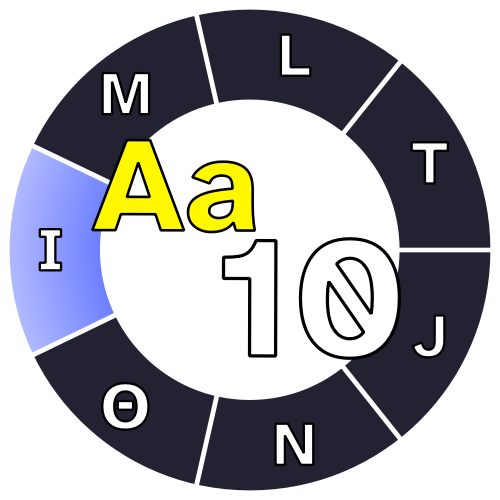
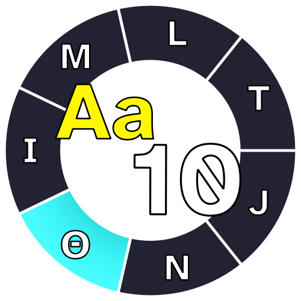

Introduction
The Alpha-Decimal system of units (abbreviated 'AlphDec' ) is a coherent system of measurement with 7 base units from which others can be derived. Much like the SI (the International System of Units) AlphDec defines its base units in terms of fundamental physical constants to measure 7 different physical quantities. These base units are:
- The vlef for measuring time, defined by the hyperfine transition frequency of caesium 133 (ΔvCs)
- The mik for measuring length, defined by the speed of light in a vacuum (c)
- The adra for measuring mass, defined by the reduced Plack constant (ℏ)
- The ilek for measuring electric current, defined by the elementary charge (echar)
- The zes for measuring thermodynamic temperature, defined by the Boltzmann constant (kB)
- The pos for measuring amount of substance, defined by the Avogadro constant (NA)
- The ker for measuring luminous intensity, defined by the luminous efficacy of 540 MHz radiation (Kcd)
This page contains the definition, development and explanation of the Alpha-Decimal system of measurement.
Motivation
AlphDec was first ideated as a thought experiment. A system branching from SI along with natural systems of measurement that 'normalises' some physical constants to a value that is easy to work with.
Despite the many advantages and clever design of SI one could say it faces a problem similar to the Imperial System that preceded it. The Units are a bit outdated.
SI units were designed a long time ago and were suited for the needs of scientifics back then (in the 18th century), using common materials and known physical values to define the base units; for example, the metre was originaly defined using the circumference of the earth and the gram as the mass of one cubic centimetre of water. But now, the scientific community uses other values, mostly unknown (by today's standards) when the metric system was created.
Nowadays, it is better to define the units in terms of fundamental values that can be measured and derived anywhere on the universe; and while the SI did this in 2019 redefining the units, it kept their size as close as possible. As a consequence, the numeric values given to these constants the universe provides to us are rather akward. Look no further than the speed of light, c, a constant crucial to modern physics, set to be exactly 299 792 458 m/s.
Although niche, this very issue has resulted in other units created by scientist suited for their field, for example, the electronVolt. And going further, entire different systems, natural systems, such as the Planck units that normalise the speed of light, the reduced Planck constant and the gravitational constant (G) to be 1. This results in nice values at the cost of an impractical scale for everyday use.
But perhaps there is a middle ground where the units retain their convenient size while doing justice to the universal parameters that define them. With that goal in mind the Alpha-Decimal system was created.
Concept
| AlphDec unit | symbol | Quantity | |
|---|---|---|---|
| SI unit (symbol) | (approximated) conversion factor | ||
| Definition | |||
| vlef | vl | Time | |
| second (s) | 1vl = 0.432 000 s | ||
| Defined by taking the fixed numerical value of caesium frequency, ΔvCs, to be 3 971 217 017 when expressed in terms of vl-1 | |||
| mik | mk | Length | |
| metre (m) | 1mk = 1.295 103 m | ||
| Defined by taking the fixed numerical value of the speed of ligth in a vacuum, c, to be 108 when expressed in the unit mk/ vl | |||
| adra | dr | Mass | |
| kilogram (kg) | 1dr = 2.716 133 kg | ||
| Defined by taking the fixed numerical value of the reduced Planck constant, ℏ, to be 10-35 when expressed in terms of mk2× dr/ vl | |||
| ilek | il | (I) electric current |  |
| ampere (A) | 1il = 0.370 874 A | ||
| Defined by taking the fixed numerical value of the elementary charge, echar, to be 10-18 when expressed in terms of il× vl | |||
| zes | zs | (Θ) thermodynamic temperature |  |
| kelvin (K) | 1zs = 0.176 811 K | ||
| Defined by taking the fixed numerical value of the Boltzmann constant, kB, to be 10-25 when expressed in terms of mk2× dr/(vl2× zs) | |||
| pos | ps | (N) ammount of substance | |
| mole (mol) | 1ps = 1.660 539 mol | ||
| Defined by taking the fixed numerical value of the Avogadro constant, NA, to be 1024 when expressed in terms of ps-1 | |||
| ker | kr | (J) luminous intensity |  |
| candela (cd) | 1kr = 0.385 948 cd | ||
| Defined by taking the fixed numerical value of the luminous efficacy of monochromatic radiation of frequency 233.28× 1012 vl-1, Kcd (the frequency of light to which the human eye is most sensitive to), to be 1014 when expressed in terms of vl3× mk2× kr/(mk4× dr) | |||
In AlphDec, all the defining constants have a value of a power of 10 (except ΔvCs). This is achieved after defining the unit of time.
The vlef
This unit is a bit different from the other 6. Technically it's set to the average solar day --the period in which the earth completes one rotation around its axis and the sun returns to its highest point in the sky (around 86400 seconds); In this case, one solar day is set to be (approximately) 200 000 vlef. This is achieved by defining one vlef (1 vl) in terms of the unperturbed ground-state hyperfine transition frequency of a caesium 133 atom (ΔvCs), setting it to be 3 971 217 017 when expressed in therms of vl-1.
In terms of ΔvCs the vlef would be defined as such:
\[1vl = {3971217017 \over \Delta v_{Cs}}.\]
making the vlef equivalent to roughly 0.432 seconds
\[ 1s = \frac{9192631770}{\Delta v_{Cs}} \] \[ \Delta v_{Cs} = \frac{1 vl}{3971217017} = \frac{1 s}{9192631770} \] \[ 1vl = \left(\frac{3971217017}{9192631770}\right)s \approx 0.4320\,0001\,0047\,12\; s. \]
The advantage of a 20-hour clock is that it resembles more a sundial that expresses the angle of the sun in radians, like a protractor, if the day starts at sunrise and the clock turns counter-clockwise, then the clock-hand would keep track of the angle of the sun.
With the unit of time, now it's easier to define the units of length, mass, current, temperature and luminous intensity.
The mik
The mik (mk) is the unit of length, its definition is much simpler. It sets the speed of light, c, to be exactly 108 (100 000 000) when expressed in mk/ vl.
\[ 1mk = \left(\frac{c}{10^8} \right) vl = 3971217017 \times 10^{-8} \frac{c}{\Delta v_{Cs}} \] \[ 1mk = 39.7121\,7017\; \frac{c}{\Delta v_{Cs}}. \]
The mik is roughly equal to 1.295 metres:
\[ 1m = \frac{9192631770}{299792458} \frac{c}{\Delta v_{Cs}} \] \[ \frac{c}{\Delta v_{Cs}} = \left(\frac{10^8}{3971217017} \right) mk = \left(\frac{299792458}{9192631770} \right) m \] \[ 1mk = \left(\frac{3971217017 \times 299792458}{9192631770} \right) \times 10^{-8} m \] \[ 1mk \approx 1.2951\,0344\,8680\,68\; m. \]
The adra
The adra (dr) is the unit of mass. With it the reduced Planck constant, ℏ, is set to be 10-35 when expressed in mk2× dr/ vl.
\[ 1 dr = \left(\frac{\hbar}{10^{-35}} \right) s\ m^{-2} = \hbar \times 10^{35} s\ m^{-2} \] \[ 1dr = \frac{10^{51}}{3971217017} \frac{\Delta v_{Cs}\ \hbar}{c^2} \approx 2.5181\,1975 \times 10^{41} \frac{\Delta v_{Cs}\ \hbar}{c^2}. \]
The adra is roughly equal to 2.716 kilograms.
\[ 1 kg = \frac{2 \pi (299792458)^2}{(6.62607015 \times 10^{-34})(9192631770)} \frac{\Delta v_{Cs}\ \hbar}{c^2} \] \[ \frac{\Delta v_{Cs}\ \hbar}{c^2} = \left(\frac{3971217017}{10^{51}} \right)dr = \left (\frac{(6.62607015 \times 10^{-34})(9192631770)}{2 \pi (299792458)^2} \right) kg \] \[ 1 dr = \frac{6.62607015(9192631770)}{2 \pi (299792458)^2 \times 3971217017} \times 10^{17}kg \]
\[ 1 dr \approx 2.7161\,3278\,8720\,13\; kg. \]
The ilek
The ilek (il) is the unit of electric current. It is defined by setting the value of the elementary charge, echar, (the electric charge carried by a single proton) to be 10-18 when expressed in vl× il.
\[ 1 il = \left(\frac{e_{char}}{10^{-18}} \right)vl^{-1} = e_{char} \times 10^{18} vl^{-1} \] \[ 1 il = \frac{10^{18}}{3971217017} \Delta v_{Cs}\ e_{char} \approx 2.5181\,1975 \times 10^8 \Delta v_{Cs}\ e_{char}. \]
One ilek is roughly equal to 0.371 amperes.
\[ 1 A = \frac{1}{(9192631770)(1.602176634 \times 10^{-19})} \Delta v_{Cs}\ e_{char} \] \[ \Delta v_{Cs}\ e_{char} = 3971217017 \times 10^{-18} il = (9192631770 \times 1.602176634) \times 10^{-19}A \] \[ 1 il = \left(\frac{9192631770 \times 1.602176634}{3971217017} \right) \times 10^{-1} A \]
\[ 1 il \approx 0.3708\,7421\,2207\,78\; A. \]
The zes
The zes (zs) is the unit of thermodynamic temperature (atomic kinetic energy). It sets the value of the Boltzmann constant, kB, to be exactly 10-25 when expressed in mk2× dr/(vl2× zs).
\[ 1 zs = \left(\frac{10^{-25}}{k_B} \right) vl^{-2}\ mk^2\ dr \] \[ 1 zs = \frac{10^{10}}{3971217017} \frac{\Delta v_{Cs}\ \hbar}{k_B} \approx 2.5181\,1975 \frac{\Delta v_{Cs}\ \hbar}{k_B}. \]
One zes is roughly equal to 0.177 kelvin.
\[ 1 K = \frac{2 \pi(1.380649 \times 10^{-23})}{(9192631770)(6.62607015 \times 10^{-34})} \frac{\Delta v_{Cs}\ \hbar}{k_B} \] \[ \frac{\Delta v_{Cs}\ \hbar}{k_B} = \left(\frac{3971217017}{10^{10}} \right) zs = \left(\frac{9192631770 \times 6.62607015}{2 \pi (1.380649 \times 10^{11})} \right) K \] \[ 1 zs = \left(\frac{9192631770 \times 6.62607015}{2 \pi (1.380649) \times 3971217017} \right) \times 10^{-1} K \]
\[ 1 zs \approx 0.1768\,1093\,5291\,96\; K. \]
The pos
The pos (ps) is the unit for ammount of substance. It sets the Avogadro constant, NA, to be 1024 when expressed in ps-1.
\[ 1 ps = \frac{10^{24}}{N_A}. \]
One pos is roughly equal to 1.661 moles.
\[ 1 mol = \frac{6.02214076 \times 10^{23}}{N_A} \] \[ N_A = 10^{24}\ ps^{-1} = 6.02214076 \times 10^{23}\ mol^{-1} \] \[ 1 ps = \left(\frac{10^{24}}{6.02214076 \times 10^{23}} \right) mol \] \[ 1ps \approx 1.6605\,3906\,7173\,85\; mol. \]
The ker
The ker (kr) is the unit for luminous intensity in a given direction. It sets the luminous efficacy of monochromatic radiation of frequency 540× 1012Hz (the frequency of light to which the human eye is most sensitive to), Kcd, to be 100 000 when expressed in vl3× mk2× kr/(mk4× dr).
\[ 1 kr = \left(\frac{K_{cd}}{10^5} \right) vl^{-3}\ mk^2\ dr\ st^{-1} \] \[ 1 kr = \frac{10^{30}}{3971217017^2} (\Delta v_{Cs})^2\ \hbar\ K_{cd} \approx 6.3409\,2707\; (\Delta v_{Cs})^2\ \hbar\ K_{cd}. \]
One ker is roughly equal to 0.385 948 candelas.
\[ 1 cd = \left(\frac{1}{(9192631770)^2(6.62607015 \times 10^{-34})683} \right) \]
Layout and style inspired by the metricsystem.net/ website